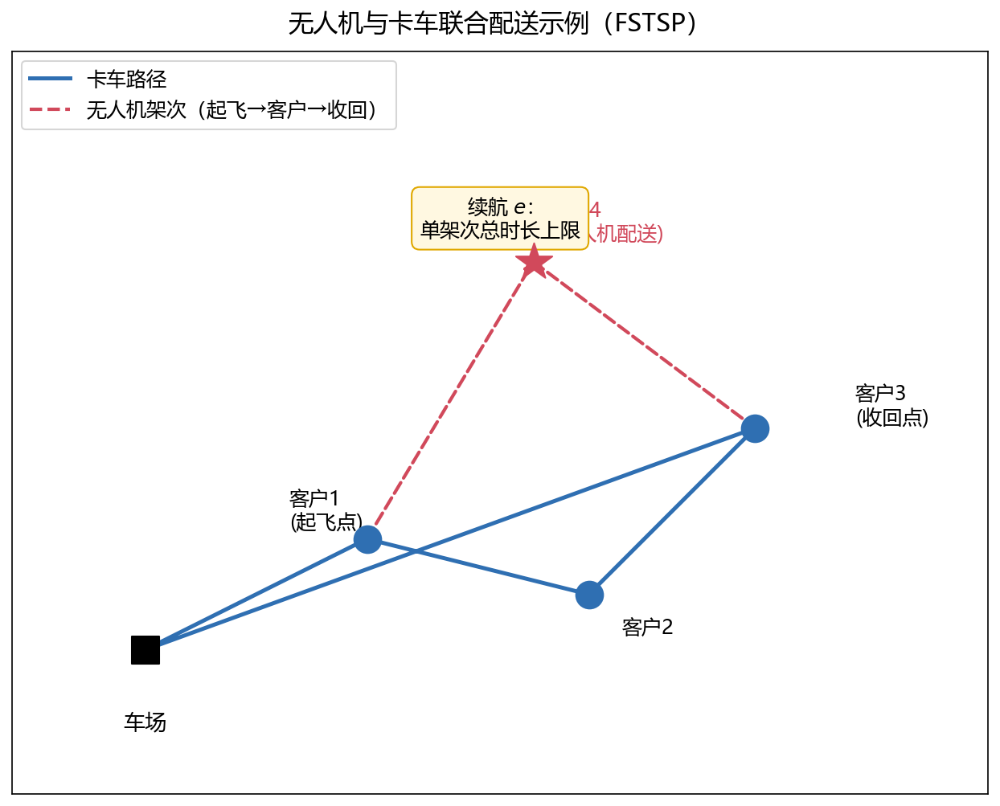

随着电商与即时物流的快速发展，"最后一公里"配送成本通常占到整个供应链成本的 25%–40%，是降本增效的关键环节。地面卡车受道路网络与交通状况约束，而无人机具有空中直线飞行、不受地面道路限制、速度快等优势，但受续航、载重与法规限制。将两者结合：卡车作为"移动基站"携带无人机，沿路径在合适的节点起飞与收回无人机，由无人机负责那些对卡车而言"绕路严重"的客户，从而在不大幅增加车辆数量的前提下提升配送效率。
这种"卡车 + 无人机"协同配送问题最早由 Murray 和 Chu (2015) 以 Flying Sidekick Traveling Salesman Problem（FSTSP） 的形式提出，其核心决策有三：①确定卡车的行驶路径与客户服务顺序；②确定每个客户由卡车还是无人机服务；③确定无人机各架次（sortie）的起飞点与收回点。本文给出该问题的混合整数规划（MIP）模型。
问题描述
考虑一个配送场景：区域内有一个车场（配送中心）、若干个客户，以及一辆同时携带一架无人机的卡车。车场派出卡车，卡车沿路径依次访问客户；无人机可以在卡车到达的任意节点（含车场）起飞，直线飞行至某个客户完成配送后，飞回卡车路径上的某个后续节点被收回，与卡车继续前行。目标是设计卡车路径与无人机各架次，使完成全部客户配送的总时间最小，即最小化卡车返回车场的时刻（makespan）。
下图展示了一个 FSTSP 示例：卡车从车场出发，依次访问客户 1、2、3 后返回车场；在客户 1 处无人机起飞，配送客户 4 后，在客户 3 处被收回。

基本假设
为便于建模，作如下假设：
一辆卡车携带一架无人机。卡车负责运输无人机与部分包裹，其路径为从车场出发、最终返回车场的闭合回路。
无人机单次架次只服务一个客户（单件包裹载荷），服务完毕后须飞回卡车所在节点被收回。
无人机只能在卡车到达的节点（含车场）起飞与收回；起飞、收回过程需要一定时间，并入服务时间处理。
无人机沿欧氏距离直线飞行，不受道路网络约束；飞行时间与距离成正比，且单次架次从起飞到收回的总时长不超过续航 e e e
每个客户恰好被服务一次，服务时间固定：卡车服务一个客户需 s t s_t s t s d s_d s d
同一节点不同时作为起飞点和收回点。
符号
决策变量：
x i j ∈ { 0 , 1 } x_{ij}\in\{0, 1\} x ij ∈ { 0 , 1 } x i j = 1 x_{ij}=1 x ij = 1 ( i , j ) (i,j) ( i , j ) x i j = 0 x_{ij}=0 x ij = 0 y i j k ∈ { 0 , 1 } y_{ijk}\in\{0, 1\} y ij k ∈ { 0 , 1 } y i j k = 1 y_{ijk}=1 y ij k = 1 i i i j j j k k k y i j k = 0 y_{ijk}=0 y ij k = 0 i ≠ j ≠ k i\neq j\neq k i = j = k t i ∈ R t_i\in\mathbb{R} t i ∈ R i i i t i ′ ∈ R t'_i\in\mathbb{R} t i ′ ∈ R i i i u i ∈ Z + u_i\in\mathbb{Z}^+ u i ∈ Z + i i i p i j ∈ { 0 , 1 } p_{ij}\in\{0, 1\} p ij ∈ { 0 , 1 } i i i j j j p i j = 1 p_{ij}=1 p ij = 1 p i j = 0 p_{ij}=0 p ij = 0
参数：
c c c C = { 1 , 2 , … , c } \mathcal{C}=\{1,2,\ldots,c\} C = { 1 , 2 , … , c } C ′ ⊊ C \mathcal{C}'\subsetneq \mathcal{C} C ′ ⊊ C N = { 0 , 1 , … , c + 1 } \mathcal{N}=\{0,1,\ldots,c+1\} N = { 0 , 1 , … , c + 1 } 0 0 0 1 1 1 c c c c + 1 c+1 c + 1 N 0 = { 0 , 1 , … , c } \mathcal{N}_0=\{0,1,\ldots,c\} N 0 = { 0 , 1 , … , c } N + = { 1 , … , c + 1 } \mathcal{N}_+=\{1,\ldots,c+1\} N + = { 1 , … , c + 1 } τ i j \tau_{ij} τ ij i i i j j j τ i j ′ \tau'_{ij} τ ij ′ i i i j j j S L S_L S L S R S_R S R e e e P = { ( i , j , k ) ∣ ∀ i ∈ N 0 , j ∈ C ′ , k ∈ N + } \mathcal{P}=\{(i,j,k) | \forall i\in\mathcal{N}_0,\ j\in\mathcal{C}',\ k\in\mathcal{N}_+\} P = {( i , j , k ) ∣∀ i ∈ N 0 , j ∈ C ′ , k ∈ N + } i i i j j j k k k M M M
数学模型
目标函数
最小化卡车或无人机返回仓库的最晚时间，即完成最小化全部配送的总时间：
min t c + 1 \min\ t_{c+1} min t c + 1 约束条件
（1）卡车路径约束 ：卡车路径约束的主要作用是保证规划的路径是一个闭合的环路。∑ i ∈ N 0 i ≠ j x i j + ∑ i ∈ N 0 i ≠ j ∑ k ∈ N + ( i , j , k ) ∈ P y i j k = 1 , ∀ j ∈ C (1)
\sum_{\substack{i \in \mathcal{N}_0 \\ i \neq j}} x_{ij}
+
\sum_{\substack{i \in \mathcal{N}_0 \\ i \neq j}}
\sum_{\substack{k \in \mathcal{N}_+ \\ (i,j,k) \in \mathcal{P}}} y_{ijk} = 1,
\quad \forall j \in \mathcal{C} \tag{1}
i ∈ N 0 i = j ∑ x ij + i ∈ N 0 i = j ∑ k ∈ N + ( i , j , k ) ∈ P ∑ y ij k = 1 , ∀ j ∈ C ( 1 )
∑ j ∈ N + x 0 j = 1 (2)
\sum_{j \in \mathcal{N}_+} x_{0j} = 1 \tag{2}
j ∈ N + ∑ x 0 j = 1 ( 2 ) ∑ i ∈ N 0 x i , c + 1 = 1 (3)
\sum_{i \in \mathcal{N}_0} x_{i, c+1} = 1 \tag{3}
i ∈ N 0 ∑ x i , c + 1 = 1 ( 3 ) u i − u j + 1 − ( c + 2 ) ( 1 − x i j ) ≤ 0 , ∀ i ∈ C , j ∈ N + : i ≠ j (4)
u_i - u_j + 1 - (c+2)(1 - x_{ij}) \leq 0,
\quad \forall i \in \mathcal{C}, \; j \in \mathcal{N}_+ : i \neq j \tag{4}
u i − u j + 1 − ( c + 2 ) ( 1 − x ij ) ≤ 0 , ∀ i ∈ C , j ∈ N + : i = j ( 4 ) 1 ≤ u i ≤ c + 2 , ∀ i ∈ N + (5)
1 \leq u_i \leq c+2, \quad \forall i \in \mathcal{N}_+ \tag{5}
1 ≤ u i ≤ c + 2 , ∀ i ∈ N + ( 5 ) ∑ i ∈ N 0 i ≠ j x i j = ∑ k ∈ N + k ≠ j x j k , ∀ j ∈ C (6)
\sum_{\substack{i \in \mathcal{N}_0 \\ i \neq j}} x_{ij}
=
\sum_{\substack{k \in \mathcal{N}_+ \\ k \neq j}} x_{jk},
\quad \forall j \in \mathcal{C} \tag{6}
i ∈ N 0 i = j ∑ x ij = k ∈ N + k = j ∑ x j k , ∀ j ∈ C ( 6 ) 各个约束式的含义如下。约束式(1)确保每个客户只被访问一次（无人机和卡车加起来访问一次）。约束式(2)保证卡车一定从仓库出发一次。约束式(3)保证卡车最终必须到达终点一次。约束式(4)为子环路消除约束。约束式(5)限定了访问顺序决策变量u i u_i u i
（2）无人机路径约束 ：无人机的路径约束旨在确保无人机的飞行路径符合实际操作要求。∑ j ∈ C i ≠ j ∑ k ∈ N + ( i , j , k ) ∈ P y i j k ≤ 1 , ∀ i ∈ N 0 (7)
\sum_{\substack{j \in \mathcal{C} \\ i \neq j}}
\sum_{\substack{k \in \mathcal{N}_+ \\ (i,j,k) \in \mathcal{P}}} y_{ijk} \leq 1,
\quad \forall i \in \mathcal{N}_0 \tag{7}
j ∈ C i = j ∑ k ∈ N + ( i , j , k ) ∈ P ∑ y ij k ≤ 1 , ∀ i ∈ N 0 ( 7 )
∑ i ∈ N 0 i ≠ k ∑ j ∈ C ( i , j , k ) ∈ P y i j k ≤ 1 , ∀ k ∈ N + (8)
\sum_{\substack{i \in \mathcal{N}_0 \\ i \neq k}}
\sum_{\substack{j \in \mathcal{C} \\ (i,j,k) \in \mathcal{P}}} y_{ijk} \leq 1,
\quad \forall k \in \mathcal{N}_+ \tag{8}
i ∈ N 0 i = k ∑ j ∈ C ( i , j , k ) ∈ P ∑ y ij k ≤ 1 , ∀ k ∈ N + ( 8 ) 2 y i j k ≤ ∑ h ∈ N 0 h ≠ i x h i + ∑ l ∈ C l ≠ k x l k , ∀ i ∈ C , j ∈ { C : i ≠ j } , k ∈ { N + : ( i , j , k ) ∈ P } (9)
2y_{ijk} \leq
\sum_{\substack{h \in \mathcal{N}_0 \\ h \neq i}} x_{hi}
+
\sum_{\substack{l \in \mathcal{C} \\ l \neq k}} x_{lk},
\quad
\forall i \in \mathcal{C}, \;
j \in \{\mathcal{C} : i \neq j\}, \;
k \in \{\mathcal{N}_+ : (i,j,k) \in \mathcal{P}\} \tag{9}
2 y ij k ≤ h ∈ N 0 h = i ∑ x hi + l ∈ C l = k ∑ x l k , ∀ i ∈ C , j ∈ { C : i = j } , k ∈ { N + : ( i , j , k ) ∈ P } ( 9 ) y 0 j k ≤ ∑ h ∈ N 0 h ≠ k x h k , ∀ j ∈ C , k ∈ { N + : ( 0 , j , k ) ∈ P } (10)
y_{0jk} \leq
\sum_{\substack{h \in \mathcal{N}_0 \\ h \neq k}} x_{hk},
\quad
\forall j \in \mathcal{C}, \;
k \in \{\mathcal{N}_+ : (0,j,k) \in \mathcal{P}\} \tag{10}
y 0 j k ≤ h ∈ N 0 h = k ∑ x hk , ∀ j ∈ C , k ∈ { N + : ( 0 , j , k ) ∈ P } ( 10 ) u k − u i − 1 + ( c + 2 ) ( 1 − ∑ j ∈ C ( i , j , k ) ∈ P y i j k ) ≥ 0 , ∀ i ∈ C , k ∈ { N + : k ≠ i } (11)
u_k - u_i - 1 + (c+2)
\left(
1 -
\sum_{\substack{j \in \mathcal{C} \\ (i,j,k) \in \mathcal{P}}} y_{ijk}
\right) \geq 0,
\quad
\forall i \in \mathcal{C}, \;
k \in \{\mathcal{N}_+ : k \neq i\} \tag{11}
u k − u i − 1 + ( c + 2 ) 1 − j ∈ C ( i , j , k ) ∈ P ∑ y ij k ≥ 0 , ∀ i ∈ C , k ∈ { N + : k = i } ( 11 ) 各个约束式的含义如下。约束式(7)和约束式(8)限制了无人机至多可以从特定点（包括仓库）起飞或者回收一次。约束式(9)表示如果无人机从i i i k k k i i i k k k k k k i i i k k k k k k i i i
（3）卡车与无人机配合约束 ：卡车和无人机的配合约束是为了保证无人机和卡车在时间和空间上的一致性。具体约束如下：
t i ′ ≥ t i − M ( 1 − ∑ j ∈ C i ≠ j ∑ k ∈ N + ( i , j , k ) ∈ P y i j k ) , ∀ i ∈ C (12)
t_{i}^{\prime} \geq t_{i} - M \left( 1 -
\sum_{\substack{j \in \mathcal{C} \\ i \neq j}}
\sum_{\substack{k \in \mathcal{N}_+ \\ (i,j,k) \in \mathcal{P}}} y_{ijk}
\right),
\quad \forall i \in \mathcal{C} \tag{12}
t i ′ ≥ t i − M 1 − j ∈ C i = j ∑ k ∈ N + ( i , j , k ) ∈ P ∑ y ij k , ∀ i ∈ C ( 12 ) t i ′ ≤ t i + M ( 1 − ∑ j ∈ C i ≠ j ∑ k ∈ N + ( i , j , k ) ∈ P y i j k ) , ∀ i ∈ C (13)
t_{i}^{\prime} \leq t_{i} + M \left( 1 -
\sum_{\substack{j \in \mathcal{C} \\ i \neq j}}
\sum_{\substack{k \in \mathcal{N}_+ \\ (i,j,k) \in \mathcal{P}}} y_{ijk}
\right),
\quad \forall i \in \mathcal{C} \tag{13}
t i ′ ≤ t i + M 1 − j ∈ C i = j ∑ k ∈ N + ( i , j , k ) ∈ P ∑ y ij k , ∀ i ∈ C ( 13 ) t k ′ ≥ t k − M ( 1 − ∑ i ∈ N 0 i ≠ k ∑ j ∈ C ( i , j , k ) ∈ P y i j k ) , ∀ k ∈ N + (14)
t_{k}^{\prime} \geq t_{k} - M \left( 1 -
\sum_{\substack{i \in \mathcal{N}_0 \\ i \neq k}}
\sum_{\substack{j \in \mathcal{C} \\ (i,j,k) \in \mathcal{P}}} y_{ijk}
\right),
\quad \forall k \in \mathcal{N}_+ \tag{14}
t k ′ ≥ t k − M 1 − i ∈ N 0 i = k ∑ j ∈ C ( i , j , k ) ∈ P ∑ y ij k , ∀ k ∈ N + ( 14 ) t k ′ ≤ t k + M ( 1 − ∑ i ∈ N 0 i ≠ k ∑ j ∈ C ( i , j , k ) ∈ P y i j k ) , ∀ k ∈ N + (15)
t_{k}^{\prime} \leq t_{k} + M \left( 1 -
\sum_{\substack{i \in \mathcal{N}_0 \\ i \neq k}}
\sum_{\substack{j \in \mathcal{C} \\ (i,j,k) \in \mathcal{P}}} y_{ijk}
\right),
\quad \forall k \in \mathcal{N}_+ \tag{15}
t k ′ ≤ t k + M 1 − i ∈ N 0 i = k ∑ j ∈ C ( i , j , k ) ∈ P ∑ y ij k , ∀ k ∈ N + ( 15 ) 各个约束式的含义如下。约束式(12)和约束式(13)表示如果卡车司机要在i i i i i i t i ′ = t i t'_i = t_i t i ′ = t i k k k k k k t k ′ = t k t'_k = t_k t k ′ = t k
（4）访问时间约束 ：访问时间约束旨在决策卡车和无人机访问每个客户点的时间，并保证访问先后顺序和到达客户点的时间的一致性。具体约束如下：
t k ≥ t h + τ h k + s L ( ∑ l ∈ C k ≠ l ∑ m ∈ N + ( k , l , m ) ∈ P y k l m ) + s R ( ∑ i ∈ N 0 i ≠ k ∑ j ∈ C ( i , j , k ) ∈ P y i j k ) − M ( 1 − x h k ) , ∀ h ∈ N 0 , k ∈ { N + : k ≠ h } (16)
t_k \geq t_h + \tau_{hk} + s_L \left( \sum_{\substack{l \in \mathcal{C} \\ k \neq l}} \sum_{\substack{m \in \mathcal{N}_+ \\ (k,l,m) \in \mathcal{P}}} y_{klm} \right) + s_R \left( \sum_{\substack{i \in \mathcal{N}_0 \\ i \neq k}} \sum_{\substack{j \in \mathcal{C} \\ (i,j,k) \in \mathcal{P}}} y_{ijk} \right) - M(1 - x_{hk}), \quad \forall h \in \mathcal{N}_0, \; k \in \{\mathcal{N}_+ : k \neq h\} \tag{16}
t k ≥ t h + τ hk + s L l ∈ C k = l ∑ m ∈ N + ( k , l , m ) ∈ P ∑ y k l m + s R i ∈ N 0 i = k ∑ j ∈ C ( i , j , k ) ∈ P ∑ y ij k − M ( 1 − x hk ) , ∀ h ∈ N 0 , k ∈ { N + : k = h } ( 16 ) t j ′ ≥ t i ′ + τ i j ′ − M ( 1 − ∑ k ∈ N + ( i , j , k ) ∈ P y i j k ) , ∀ j ∈ C ′ , i ∈ { N 0 : i ≠ j } (17)
t_j' \geq t_i' + \tau_{ij}' - M \left( 1 - \sum_{\substack{k \in \mathcal{N}_+ \\ (i,j,k) \in \mathcal{P}}} y_{ijk} \right), \quad \forall j \in \mathcal{C}', \; i \in \{\mathcal{N}_0 : i \neq j\} \tag{17}
t j ′ ≥ t i ′ + τ ij ′ − M 1 − k ∈ N + ( i , j , k ) ∈ P ∑ y ij k , ∀ j ∈ C ′ , i ∈ { N 0 : i = j } ( 17 ) t k ′ ≥ t j ′ + τ j k ′ + s R − M ( 1 − ∑ i ∈ N 0 ( i , j , k ) ∈ P y i j k ) , ∀ j ∈ C ′ , k ∈ { N + : k ≠ j } (18)
t_k' \geq t_j' + \tau_{jk}' + s_R - M \left( 1 - \sum_{\substack{i \in \mathcal{N}_0 \\ (i,j,k) \in \mathcal{P}}} y_{ijk} \right), \quad \forall j \in \mathcal{C}', \; k \in \{\mathcal{N}_+ : k \neq j\} \tag{18}
t k ′ ≥ t j ′ + τ j k ′ + s R − M 1 − i ∈ N 0 ( i , j , k ) ∈ P ∑ y ij k , ∀ j ∈ C ′ , k ∈ { N + : k = j } ( 18 ) t k ′ − ( t j ′ − τ i j ′ ) ≤ e + M ( 1 − y i j k ) , ∀ k ∈ N + , j ∈ { C : j ≠ k } , i ∈ { N 0 : ( i , j , k ) ∈ P } (19)
t_k' - (t_j' - \tau_{ij}') \leq e + M(1 - y_{ijk}), \quad \forall k \in \mathcal{N}_+, \; j \in \{\mathcal{C} : j \neq k\}, \; i \in \{\mathcal{N}_0 : (i,j,k) \in \mathcal{P}\} \tag{19}
t k ′ − ( t j ′ − τ ij ′ ) ≤ e + M ( 1 − y ij k ) , ∀ k ∈ N + , j ∈ { C : j = k } , i ∈ { N 0 : ( i , j , k ) ∈ P } ( 19 ) t l ′ ≥ t k ′ − M ( 3 − ∑ j ∈ C ( i , j , k ) ∈ P l ≠ j y i j k − ∑ m ∈ C m ≠ i , k , l ∑ n ∈ N + ( l , m , n ) ∈ P , n ≠ i , k y l m n − p i l ) , ∀ i ∈ N 0 , k ∈ { N + : k ≠ i } , l ∈ { C : l ≠ i , l ≠ k } (20)
t_l' \geq t_k' - M \left( 3 - \sum_{\substack{j \in \mathcal{C} \\ (i,j,k) \in \mathcal{P} \\ l \neq j}} y_{ijk} - \sum_{\substack{m \in \mathcal{C} \\ m \neq i, k, l}} \sum_{\substack{n \in \mathcal{N}_+ \\ (l,m,n) \in \mathcal{P}, n \neq i, k}} y_{lmn} - p_{il} \right), \quad \forall i \in \mathcal{N}_0, \; k \in \{\mathcal{N}_+ : k \neq i\}, \; l \in \{\mathcal{C} : l \neq i, \; l \neq k\} \tag{20}
t l ′ ≥ t k ′ − M 3 − j ∈ C ( i , j , k ) ∈ P l = j ∑ y ij k − m ∈ C m = i , k , l ∑ n ∈ N + ( l , m , n ) ∈ P , n = i , k ∑ y l mn − p i l , ∀ i ∈ N 0 , k ∈ { N + : k = i } , l ∈ { C : l = i , l = k } ( 20 ) 各个约束式的含义如下。约束式(16)表示如果卡车经过弧( h ， k ) (h，k) ( h ， k ) h h h ( h ， k ) (h，k) ( h ， k ) k k k ( i , l ) (i,l) ( i , l ) i i i k k k l l l k 点 k点 k 点 l l l
（5）子回路消除约束 ：防止出现不经过车场的子回路。u i u_i u i p i j p_{ij} p ij u i − u j − 1 + ( c + 2 ) p i j ≥ 0 , ∀ i ∈ C , j ∈ { C : i ≠ j } (21)
u_i - u_j - 1 + (c+2)p_{ij} \geq 0, \quad \forall i \in \mathcal{C}, \; j \in \{\mathcal{C} : i \neq j\} \tag{21}
u i − u j − 1 + ( c + 2 ) p ij ≥ 0 , ∀ i ∈ C , j ∈ { C : i = j } ( 21 )
u i − u j + 1 − ( c + 2 ) ( 1 − p i j ) ≤ 0 , ∀ i ∈ C , j ∈ { C : i ≠ j } (22)
u_i - u_j + 1 - (c+2)(1 - p_{ij}) \leq 0, \quad \forall i \in \mathcal{C}, \; j \in \{\mathcal{C} : i \neq j\} \tag{22}
u i − u j + 1 − ( c + 2 ) ( 1 − p ij ) ≤ 0 , ∀ i ∈ C , j ∈ { C : i = j } ( 22 ) p i j + p j i = 1 , ∀ i ∈ C , j ∈ { C : i ≠ j } (23)
p_{ij} + p_{ji} = 1, \quad \forall i \in \mathcal{C}, \; j \in \{\mathcal{C} : i \neq j\} \tag{23}
p ij + p j i = 1 , ∀ i ∈ C , j ∈ { C : i = j } ( 23 ) （6）初始条件 ：初始条件设置如下：t 0 = 0 , (24)
t_0 = 0, \tag{24}
t 0 = 0 , ( 24 )
t 0 ′ = 0 , (25)
t'_0 = 0, \tag{25}
t 0 ′ = 0 , ( 25 ) p 0 j = 1 , ∀ j ∈ C (26)
p_{0j} = 1, \forall j \in \mathcal{C} \tag{26}
p 0 j = 1 , ∀ j ∈ C ( 26 ) 完整模型
将上述各部分汇总如下：
Minimize t c + 1 Subject to ∑ i ∈ N 0 i ≠ j x i j + ∑ i ∈ N 0 i ≠ j ∑ k ∈ N + ( i , j , k ) ∈ P y i j k = 1 , ∀ j ∈ C ∑ j ∈ N + x 0 j = 1 ∑ i ∈ N 0 x i , c + 1 = 1 u i − u j + 1 − ( c + 2 ) ( 1 − x i j ) ≤ 0 , ∀ { i ∈ C , j ∈ N + : i ≠ j } 1 ≤ u i ≤ c + 2 , ∀ i ∈ N + ∑ i ∈ N 0 i ≠ j x i j = ∑ k ∈ N + k ≠ j x j k , ∀ j ∈ C ∑ j ∈ C i ≠ j ∑ k ∈ N + ( i , j , k ) ∈ P y i j k ≤ 1 , ∀ i ∈ N 0 ∑ i ∈ N 0 i ≠ k ∑ j ∈ C ( i , j , k ) ∈ P y i j k ≤ 1 , ∀ k ∈ N + 2 y i j k ≤ ∑ h ∈ N 0 h ≠ i x h i + ∑ l ∈ C l ≠ k x l k , ∀ { i ∈ C , j ∈ C , k ∈ N + : ( i , j , k ) ∈ P } y 0 j k ≤ ∑ h ∈ N 0 h ≠ k x h k , ∀ { j ∈ C , k ∈ N + : ( 0 , j , k ) ∈ P } u k − u i − 1 + ( c + 2 ) ( 1 − ∑ j ∈ C ( i , j , k ) ∈ P y i j k ) ≥ 0 , ∀ { i ∈ C , k ∈ N + : k ≠ i } t i ′ ≥ t i − M ( 1 − ∑ j ∈ C i ≠ j ∑ k ∈ N + ( i , j , k ) ∈ P y i j k ) , ∀ i ∈ C t i ′ ≤ t i + M ( 1 − ∑ j ∈ C i ≠ j ∑ k ∈ N + ( i , j , k ) ∈ P y i j k ) , ∀ i ∈ C t k ′ ≥ t k − M ( 1 − ∑ i ∈ N 0 i ≠ k ∑ j ∈ C ( i , j , k ) ∈ P y i j k ) , ∀ k ∈ N + t k ′ ≤ t k + M ( 1 − ∑ i ∈ N 0 i ≠ k ∑ j ∈ C ( i , j , k ) ∈ P y i j k ) , ∀ k ∈ N + t k ≥ t h + τ h k + s L ( ∑ l ∈ C k ≠ l ∑ m ∈ N + ( k , l , m ) ∈ P y k l m ) + s R ( ∑ i ∈ N 0 i ≠ k ∑ j ∈ C ( i , j , k ) ∈ P y i j k ) − M ( 1 − x h k ) , ∀ { h ∈ N 0 , k ∈ N + : k ≠ h } t j ′ ≥ t i ′ + τ i j ′ − M ( 1 − ∑ k ∈ N + ( i , j , k ) ∈ P y i j k ) , ∀ { i ∈ N 0 , j ∈ C : i ≠ j } t k ′ ≥ t j ′ + τ j k ′ + s R − M ( 1 − ∑ i ∈ N 0 ( i , j , k ) ∈ P y i j k ) , ∀ { j ∈ C , k ∈ N + : k ≠ j } t k ′ − ( t j ′ − τ i j ′ ) ≤ e + M ( 1 − y i j k ) , ∀ { i ∈ N 0 , j ∈ C , k ∈ N + : ( i , j , k ) ∈ P } t l ′ ≥ t k ′ − M ( 3 − ∑ j ∈ C ( i , j , k ) ∈ P l ≠ j y i j k − ∑ m ∈ C m ≠ i , k , l ∑ n ∈ N + ( l , m , n ) ∈ P , n ≠ i , k y l m n − p i l ) , ∀ { i ∈ N 0 , k ∈ N + : k ≠ i , l ∈ C : l ≠ i , l ≠ k } u i − u j − 1 + ( c + 2 ) p i j ≥ 0 , ∀ { i ∈ C , j ∈ C : i ≠ j } u i − u j + 1 − ( c + 2 ) ( 1 − p i j ) ≤ 0 , ∀ { i ∈ C , j ∈ C : i ≠ j } p i j + p j i = 1 , ∀ { i ∈ C , j ∈ C : i ≠ j } t 0 = 0 t 0 ′ = 0 p 0 j = 1 , ∀ j ∈ C x i j ∈ { 0 , 1 } , ∀ { i ∈ N 0 , j ∈ N + : i ≠ j } y i j k ∈ { 0 , 1 } , ∀ ( i , j , k ) ∈ P p i j ∈ { 0 , 1 } , ∀ { i ∈ C , j ∈ C : i ≠ j } u i ∈ Z + , ∀ i ∈ N + t i ≥ 0 , t i ′ ≥ 0 , ∀ i ∈ N 0 ∪ C ∪ N +
\begin{aligned}
\text{Minimize} \quad & t_{c+1} \\
\text{Subject to} \quad
& \sum_{\substack{i \in \mathcal{N}_0 \\ i \neq j}} x_{ij} + \sum_{\substack{i \in \mathcal{N}_0 \\ i \neq j}} \sum_{\substack{k \in \mathcal{N}_+ \\ (i,j,k) \in \mathcal{P}}} y_{ijk} = 1, && \forall j \in \mathcal{C} \\
& \sum_{j \in \mathcal{N}_+} x_{0j} = 1 \\
& \sum_{i \in \mathcal{N}_0} x_{i, c+1} = 1 \\
& u_i - u_j + 1 - (c+2)(1 - x_{ij}) \leq 0, && \forall \{i \in \mathcal{C}, \; j \in \mathcal{N}_+ : i \neq j\} \\
& 1 \leq u_i \leq c+2, && \forall i \in \mathcal{N}_+ \\
& \sum_{\substack{i \in \mathcal{N}_0 \\ i \neq j}} x_{ij} = \sum_{\substack{k \in \mathcal{N}_+ \\ k \neq j}} x_{jk}, && \forall j \in \mathcal{C} \\
& \sum_{\substack{j \in \mathcal{C} \\ i \neq j}} \sum_{\substack{k \in \mathcal{N}_+ \\ (i,j,k) \in \mathcal{P}}} y_{ijk} \leq 1, && \forall i \in \mathcal{N}_0 \\
& \sum_{\substack{i \in \mathcal{N}_0 \\ i \neq k}} \sum_{\substack{j \in \mathcal{C} \\ (i,j,k) \in \mathcal{P}}} y_{ijk} \leq 1, && \forall k \in \mathcal{N}_+ \\
& 2y_{ijk} \leq \sum_{\substack{h \in \mathcal{N}_0 \\ h \neq i}} x_{hi} + \sum_{\substack{l \in \mathcal{C} \\ l \neq k}} x_{lk}, && \forall \{i \in \mathcal{C}, \; j \in \mathcal{C}, \; k \in \mathcal{N}_+ : (i,j,k) \in \mathcal{P}\} \\
& y_{0jk} \leq \sum_{\substack{h \in \mathcal{N}_0 \\ h \neq k}} x_{hk}, && \forall \{j \in \mathcal{C}, \; k \in \mathcal{N}_+ : (0,j,k) \in \mathcal{P}\} \\
& u_k - u_i - 1 + (c+2)\left(1 - \sum_{\substack{j \in \mathcal{C} \\ (i,j,k) \in \mathcal{P}}} y_{ijk}\right) \geq 0, && \forall \{i \in \mathcal{C}, \; k \in \mathcal{N}_+ : k \neq i\} \\
& t_{i}^{\prime} \geq t_{i} - M\left(1 - \sum_{\substack{j \in \mathcal{C} \\ i \neq j}} \sum_{\substack{k \in \mathcal{N}_+ \\ (i,j,k) \in \mathcal{P}}} y_{ijk}\right), && \forall i \in \mathcal{C} \\
& t_{i}^{\prime} \leq t_{i} + M\left(1 - \sum_{\substack{j \in \mathcal{C} \\ i \neq j}} \sum_{\substack{k \in \mathcal{N}_+ \\ (i,j,k) \in \mathcal{P}}} y_{ijk}\right), && \forall i \in \mathcal{C} \\
& t_{k}^{\prime} \geq t_{k} - M\left(1 - \sum_{\substack{i \in \mathcal{N}_0 \\ i \neq k}} \sum_{\substack{j \in \mathcal{C} \\ (i,j,k) \in \mathcal{P}}} y_{ijk}\right), && \forall k \in \mathcal{N}_+ \\
& t_{k}^{\prime} \leq t_{k} + M\left(1 - \sum_{\substack{i \in \mathcal{N}_0 \\ i \neq k}} \sum_{\substack{j \in \mathcal{C} \\ (i,j,k) \in \mathcal{P}}} y_{ijk}\right), && \forall k \in \mathcal{N}_+ \\
& t_k \geq t_h + \tau_{hk} + s_L\left(\sum_{\substack{l \in \mathcal{C} \\ k \neq l}} \sum_{\substack{m \in \mathcal{N}_+ \\ (k,l,m) \in \mathcal{P}}} y_{klm}\right) + s_R\left(\sum_{\substack{i \in \mathcal{N}_0 \\ i \neq k}} \sum_{\substack{j \in \mathcal{C} \\ (i,j,k) \in \mathcal{P}}} y_{ijk}\right) - M(1 - x_{hk}), && \forall \{h \in \mathcal{N}_0, \; k \in \mathcal{N}_+ : k \neq h\} \\
& t_j' \geq t_i' + \tau_{ij}' - M\left(1 - \sum_{\substack{k \in \mathcal{N}_+ \\ (i,j,k) \in \mathcal{P}}} y_{ijk}\right), && \forall \{i \in \mathcal{N}_0, \; j \in \mathcal{C} : i \neq j\} \\
& t_k' \geq t_j' + \tau_{jk}' + s_R - M\left(1 - \sum_{\substack{i \in \mathcal{N}_0 \\ (i,j,k) \in \mathcal{P}}} y_{ijk}\right), && \forall \{j \in \mathcal{C}, \; k \in \mathcal{N}_+ : k \neq j\} \\
& t_k' - (t_j' - \tau_{ij}') \leq e + M(1 - y_{ijk}), && \forall \{i \in \mathcal{N}_0, \; j \in \mathcal{C}, \; k \in \mathcal{N}_+ : (i,j,k) \in \mathcal{P}\} \\
& t_l' \geq t_k' - M\left(3 - \sum_{\substack{j \in \mathcal{C} \\ (i,j,k) \in \mathcal{P} \\ l \neq j}} y_{ijk} - \sum_{\substack{m \in \mathcal{C} \\ m \neq i, k, l}} \sum_{\substack{n \in \mathcal{N}_+ \\ (l,m,n) \in \mathcal{P}, n \neq i, k}} y_{lmn} - p_{il}\right), && \forall \{i \in \mathcal{N}_0, \; k \in \mathcal{N}_+ : k \neq i, \; l \in \mathcal{C} : l \neq i, \; l \neq k\} \\
& u_i - u_j - 1 + (c+2)p_{ij} \geq 0, && \forall \{i \in \mathcal{C}, \; j \in \mathcal{C} : i \neq j\} \\
& u_i - u_j + 1 - (c+2)(1 - p_{ij}) \leq 0, && \forall \{i \in \mathcal{C}, \; j \in \mathcal{C} : i \neq j\} \\
& p_{ij} + p_{ji} = 1, && \forall \{i \in \mathcal{C}, \; j \in \mathcal{C} : i \neq j\} \\
& t_0 = 0 \\
& t'_0 = 0 \\
& p_{0j} = 1, && \forall j \in \mathcal{C} \\
& x_{ij} \in \{0,1\}, && \forall \{i \in \mathcal{N}_0, \; j \in \mathcal{N}_+ : i \neq j\} \\
& y_{ijk} \in \{0,1\}, && \forall (i,j,k) \in \mathcal{P} \\
& p_{ij} \in \{0,1\}, && \forall \{i \in \mathcal{C}, \; j \in \mathcal{C} : i \neq j\} \\
& u_i \in \mathbb{Z}^+, && \forall i \in \mathcal{N}_+ \\
& t_i \geq 0, \; t'_i \geq 0, && \forall i \in \mathcal{N}_0 \cup \mathcal{C} \cup \mathcal{N}_+
\end{aligned}
Minimize Subject to t c + 1 i ∈ N 0 i = j ∑ x ij + i ∈ N 0 i = j ∑ k ∈ N + ( i , j , k ) ∈ P ∑ y ij k = 1 , j ∈ N + ∑ x 0 j = 1 i ∈ N 0 ∑ x i , c + 1 = 1 u i − u j + 1 − ( c + 2 ) ( 1 − x ij ) ≤ 0 , 1 ≤ u i ≤ c + 2 , i ∈ N 0 i = j ∑ x ij = k ∈ N + k = j ∑ x j k , j ∈ C i = j ∑ k ∈ N + ( i , j , k ) ∈ P ∑ y ij k ≤ 1 , i ∈ N 0 i = k ∑ j ∈ C ( i , j , k ) ∈ P ∑ y ij k ≤ 1 , 2 y ij k ≤ h ∈ N 0 h = i ∑ x hi + l ∈ C l = k ∑ x l k , y 0 j k ≤ h ∈ N 0 h = k ∑ x hk , u k − u i − 1 + ( c + 2 ) 1 − j ∈ C ( i , j , k ) ∈ P ∑ y ij k ≥ 0 , t i ′ ≥ t i − M 1 − j ∈ C i = j ∑ k ∈ N + ( i , j , k ) ∈ P ∑ y ij k , t i ′ ≤ t i + M 1 − j ∈ C i = j ∑ k ∈ N + ( i , j , k ) ∈ P ∑ y ij k , t k ′ ≥ t k − M 1 − i ∈ N 0 i = k ∑ j ∈ C ( i , j , k ) ∈ P ∑ y ij k , t k ′ ≤ t k + M 1 − i ∈ N 0 i = k ∑ j ∈ C ( i , j , k ) ∈ P ∑ y ij k , t k ≥ t h + τ hk + s L l ∈ C k = l ∑ m ∈ N + ( k , l , m ) ∈ P ∑ y k l m + s R i ∈ N 0 i = k ∑ j ∈ C ( i , j , k ) ∈ P ∑ y ij k − M ( 1 − x hk ) , t j ′ ≥ t i ′ + τ ij ′ − M 1 − k ∈ N + ( i , j , k ) ∈ P ∑ y ij k , t k ′ ≥ t j ′ + τ j k ′ + s R − M 1 − i ∈ N 0 ( i , j , k ) ∈ P ∑ y ij k , t k ′ − ( t j ′ − τ ij ′ ) ≤ e + M ( 1 − y ij k ) , t l ′ ≥ t k ′ − M 3 − j ∈ C ( i , j , k ) ∈ P l = j ∑ y ij k − m ∈ C m = i , k , l ∑ n ∈ N + ( l , m , n ) ∈ P , n = i , k ∑ y l mn − p i l , u i − u j − 1 + ( c + 2 ) p ij ≥ 0 , u i − u j + 1 − ( c + 2 ) ( 1 − p ij ) ≤ 0 , p ij + p j i = 1 , t 0 = 0 t 0 ′ = 0 p 0 j = 1 , x ij ∈ { 0 , 1 } , y ij k ∈ { 0 , 1 } , p ij ∈ { 0 , 1 } , u i ∈ Z + , t i ≥ 0 , t i ′ ≥ 0 , ∀ j ∈ C ∀ { i ∈ C , j ∈ N + : i = j } ∀ i ∈ N + ∀ j ∈ C ∀ i ∈ N 0 ∀ k ∈ N + ∀ { i ∈ C , j ∈ C , k ∈ N + : ( i , j , k ) ∈ P } ∀ { j ∈ C , k ∈ N + : ( 0 , j , k ) ∈ P } ∀ { i ∈ C , k ∈ N + : k = i } ∀ i ∈ C ∀ i ∈ C ∀ k ∈ N + ∀ k ∈ N + ∀ { h ∈ N 0 , k ∈ N + : k = h } ∀ { i ∈ N 0 , j ∈ C : i = j } ∀ { j ∈ C , k ∈ N + : k = j } ∀ { i ∈ N 0 , j ∈ C , k ∈ N + : ( i , j , k ) ∈ P } ∀ { i ∈ N 0 , k ∈ N + : k = i , l ∈ C : l = i , l = k } ∀ { i ∈ C , j ∈ C : i = j } ∀ { i ∈ C , j ∈ C : i = j } ∀ { i ∈ C , j ∈ C : i = j } ∀ j ∈ C ∀ { i ∈ N 0 , j ∈ N + : i = j } ∀ ( i , j , k ) ∈ P ∀ { i ∈ C , j ∈ C : i = j } ∀ i ∈ N + ∀ i ∈ N 0 ∪ C ∪ N + 问题变体 ：
VRPD （Vehicle Routing Problem with Drones）：多辆卡车、多架无人机的推广，需要同时决定客户到卡车的分配以及各卡车携带的无人机架次。PDSTSP （Parallel Drone Scheduling TSP）：无人机从车场独立起飞、配送并返回车场，与卡车并行作业，不依赖卡车作为移动基站。其他扩展 ：考虑时间窗、无人机多包裹载荷、电池更换/充电站、风速与风向、禁飞区与噪声限制、动态订单等。
求解思路 ：FSTSP 是 NP-hard 的（卡车全配送时退化为 TSP），实际中常用元启发式（遗传算法、模拟退火、自适应大邻域搜索等）求解大规模实例；分支定界、割平面等精确方法适用于中小规模实例。
参考文献
Murray, C. C., & Chu, A. G. (2015). The flying sidekick traveling salesman problem: Optimization of drone-assisted parcel delivery. Transportation Research Part C: Emerging Technologies , 54, 86–109.
Agatz, N., Bouman, P., & Schmidt, M. (2018). Optimization approaches for the traveling salesman problem with drone. Transportation Science , 52(4), 965–981.